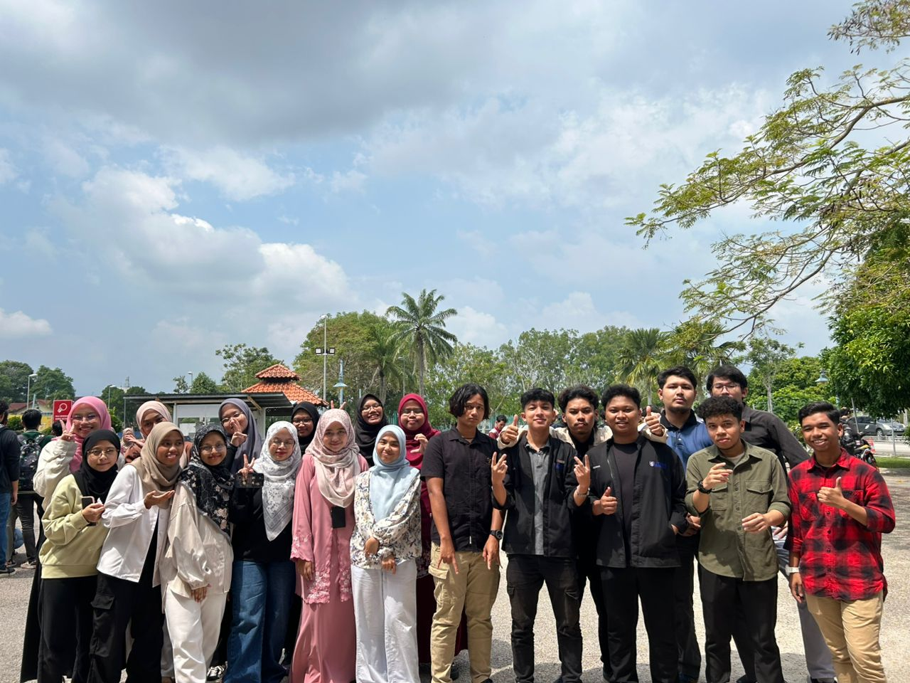

Life on Campus
- Once classes begin, we typically join each other in lectures, discussing notes or helping each other out with any concepts we’re unsure about. During breaks, we often gather with friends, sharing snacks and stories, catching up on each other’s lives. Lunchtime is usually a chance to unwind a bit more, and we sometimes study in the campus library afterward to stay productive.
In the afternoons, we’re usually back in class or in the labs, depending on the schedule. Sometimes, there’s a study session for a subject we’re focusing on. After classes, we hit the sports field for soccer or join a club activity. By evening, we relax over dinner, sometimes watching a movie or working on assignments together before winding down for the night.